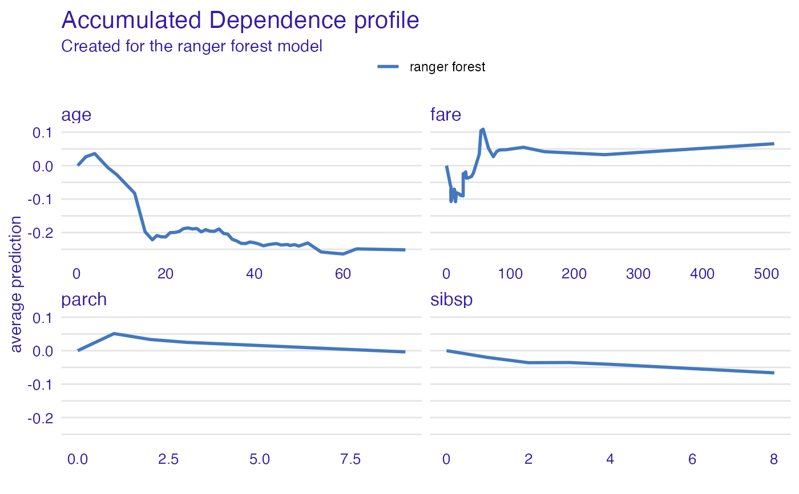

Accumulated Local Effects Profiles aka ALEPlots
Source:R/accumulated_dependence.R
accumulated_dependence.RdAccumulated Local Effects Profiles accumulate local changes in Ceteris Paribus Profiles.
Function accumulated_dependence calls ceteris_paribus and then aggregate_profiles.
accumulated_dependence(x, ...) # S3 method for explainer accumulated_dependence( x, variables = NULL, N = 500, variable_splits = NULL, grid_points = 101, ..., variable_type = "numerical" ) # S3 method for default accumulated_dependence( x, data, predict_function = predict, label = class(x)[1], variables = NULL, N = 500, variable_splits = NULL, grid_points = 101, ..., variable_type = "numerical" ) # S3 method for ceteris_paribus_explainer accumulated_dependence(x, ..., variables = NULL) accumulated_dependency(x, ...)
Arguments
| x | an explainer created with function |
|---|---|
| ... | other parameters |
| variables | names of variables for which profiles shall be calculated.
Will be passed to |
| N | number of observations used for calculation of partial dependence profiles.
By default, |
| variable_splits | named list of splits for variables, in most cases created with |
| grid_points | number of points for profile. Will be passed to |
| variable_type | a character. If |
| data | validation dataset Will be extracted from |
| predict_function | predict function Will be extracted from |
| label | name of the model. By default it's extracted from the |
Value
an object of the class aggregated_profiles_explainer
Details
Find more detailes in the Accumulated Local Dependence Chapter.
References
ALEPlot: Accumulated Local Effects (ALE) Plots and Partial Dependence (PD) Plots https://cran.r-project.org/package=ALEPlot, Explanatory Model Analysis. Explore, Explain, and Examine Predictive Models. https://pbiecek.github.io/ema/
Examples
#> #> #> #>#> #>#> #> #>library("ingredients") model_titanic_glm <- glm(survived ~ gender + age + fare, data = titanic_imputed, family = "binomial") explain_titanic_glm <- explain(model_titanic_glm, data = titanic_imputed[,-8], y = titanic_imputed[,8], verbose = FALSE) adp_glm <- accumulated_dependence(explain_titanic_glm, N = 25, variables = c("age", "fare")) head(adp_glm)#> Top profiles : #> _vname_ _label_ _x_ _yhat_ _ids_ #> 1 age lm 0.1666667 0.000000000 0 #> 2 age lm 2.0000000 -0.002551359 0 #> 3 age lm 4.0000000 -0.005323191 0 #> 4 age lm 7.0000000 -0.009455409 0 #> 5 age lm 9.0000000 -0.012193262 0 #> 6 age lm 13.0000000 -0.017620564 0# \donttest{ library("ranger") model_titanic_rf <- ranger(survived ~., data = titanic_imputed, probability = TRUE) explain_titanic_rf <- explain(model_titanic_rf, data = titanic_imputed[,-8], y = titanic_imputed[,8], label = "ranger forest", verbose = FALSE) adp_rf <- accumulated_dependence(explain_titanic_rf, N = 200, variable_type = "numerical") plot(adp_rf)adp_rf <- accumulated_dependence(explain_titanic_rf, N = 200, variable_type = "categorical") plotD3(adp_rf, label_margin = 80, scale_plot = TRUE) # }